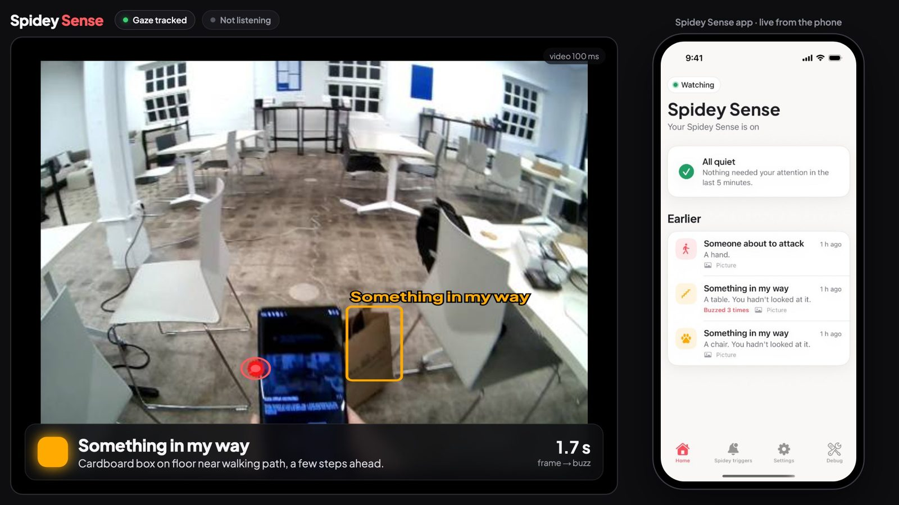
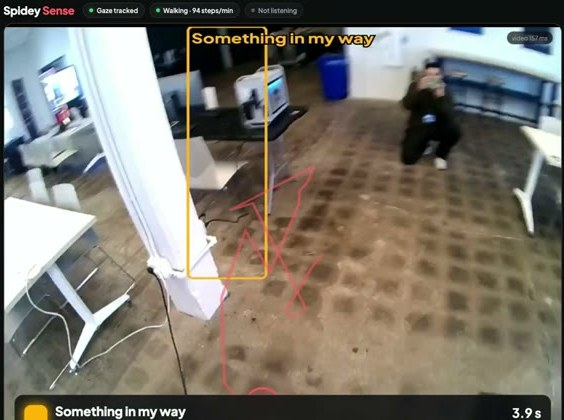
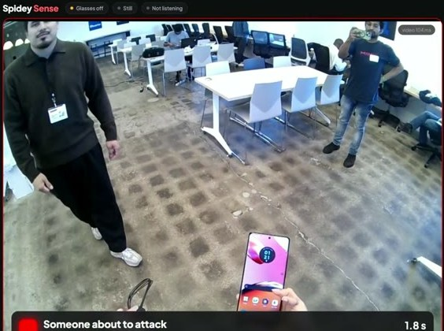
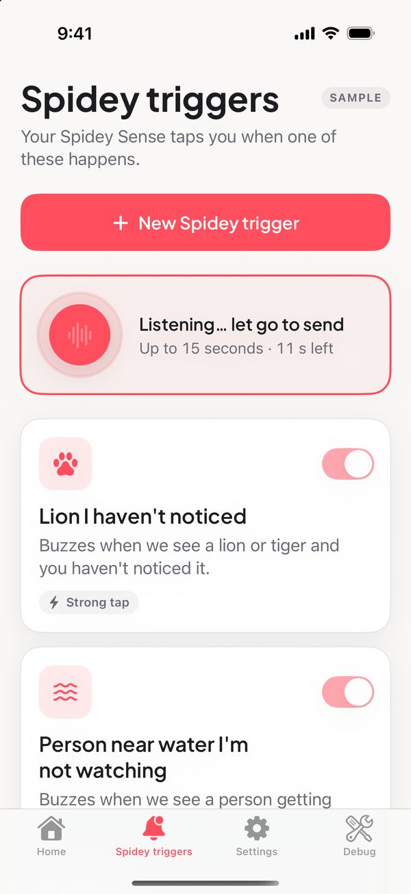
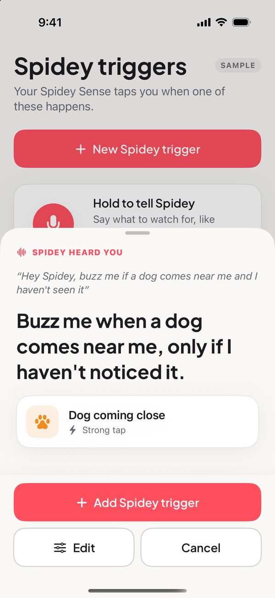
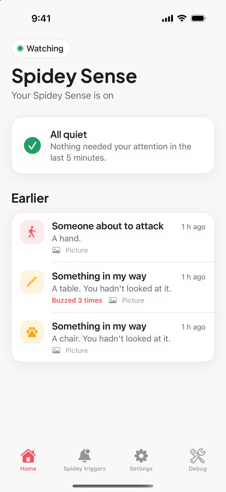
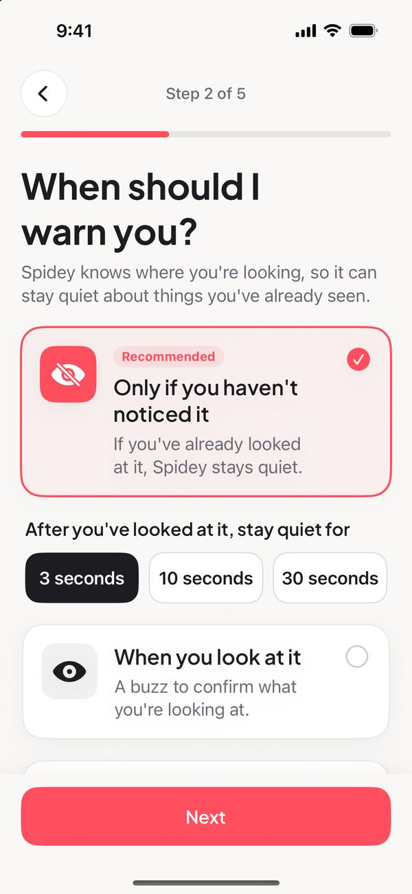
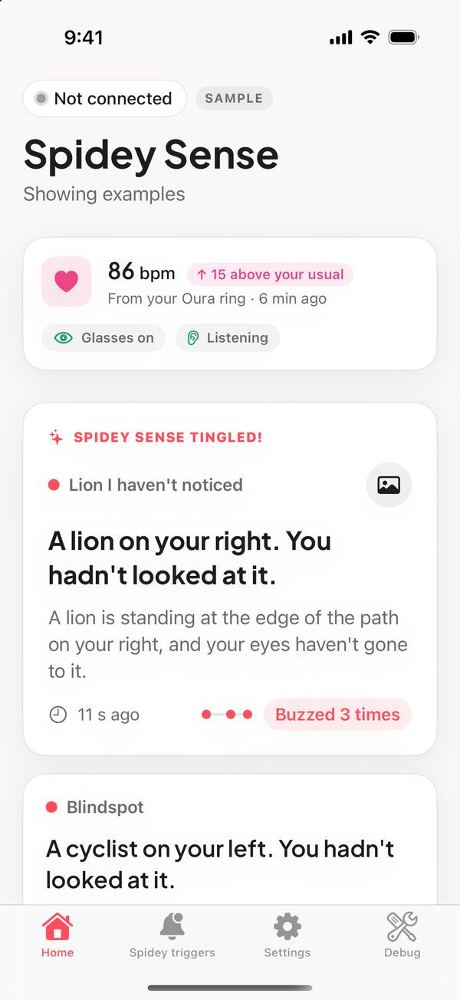

Real takes from the hackathon floor, as the glasses saw them.

Walking while reading my phone. It flagged the cord before I reached it.
Amber buzz

Danger gets a stronger buzz, whether or not you saw it coming.
Red buzz, 1.8 s after the frame


Hold the button, say what to watch for, and confirm the trigger it writes.
Every buzz is kept with the picture the glasses saw and a sentence on what they noticed.



| Glasses video to the Mac | ~90 ms |
| Something in view to a buzz, in real takes | 1–2 s |
| Dot buzz over Bluetooth | 117 ms |
| Obstacles caught in 56 hand-labelled frames | 96% |
| Fist frames caught after rewording the trigger | 14 / 14 |